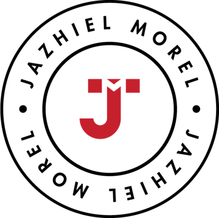

Jazhiel Morel
Informe de diagnóstico de la dirección
Alimentos del Valle, S.R.L.
Empresa ficticia · 120 empleados
6 directivos entrevistados · 2 reuniones observadas
5 decisiones recientes revisadas
Confidencial · Ejemplo
Trabajo con quienes dirigen empresas y con sus equipos directivos para que la dirección funcione como un sistema: prioridades claras, decisiones bien tomadas y acuerdos que se cumplen. Con método, por escrito y con seguimiento.
Qué resolvemos
El gobierno corporativo define quién decide. Este trabajo asegura cómo se decide y que lo decidido se ejecute.
Aprobaciones, compras y dudas que esperan por alguien, y una empresa que se frena cuando esa persona no está.
Se decide en la reunión y, a las dos semanas, nadie recuerda quién quedó responsable.
Informes leídos en voz alta, los mismos temas cada semana y las decisiones de verdad tomadas en el pasillo.
Buenos profesionales que suben todo hacia arriba porque nadie definió qué pueden decidir solos.
Todo es urgente, el equipo apaga fuegos y los proyectos importantes no avanzan.
Una expansión, un socio o una inversión que se aprueban con prisa y se pagan durante años.
Lo que vas a recibir
Cada servicio termina en un documento que tu dirección puede leer, discutir y revisar. Este es un extracto del Informe de diagnóstico.
Ejemplo ilustrativo con una empresa ficticia. Es un extracto parcial: el informe real se elabora con la información, entrevistas y datos de cada empresa.
Jazhiel Morel
Informe de diagnóstico de la dirección
Empresa ficticia · 120 empleados
6 directivos entrevistados · 2 reuniones observadas
5 decisiones recientes revisadas
Confidencial · Ejemplo
1 · Lo que hoy pasa por el dueño
| Decisión | Hoy decide | Podría decidir |
|---|---|---|
| Compras menores de RD$50,000 | Dueño | Gerencia de compras |
| Descuentos a clientes | Dueño | Gerencia comercial |
| Contratar supervisores | Dueño | Gerencia de área con RR. HH. |
| Cambios de turno en planta | Dueño | Gerencia de producción |
Hallazgo. De 24 decisiones frecuentes revisadas, 17 pasan por el dueño. 11 podrían delegarse con reglas escritas.
Ejemplo ilustrativo · empresa ficticia
2 · Dependencia por área
3 · Recomendaciones, primeros 30 días
Ejemplo ilustrativo · empresa ficticia
El método
Es el método que uso para las decisiones importantes dentro de cada servicio. Cinco movimientos, siempre en este orden. Los cuatro primeros pasan en la mesa. El quinto es el que separa el criterio de la suerte.
Cada persona escribe su juicio antes de que nadie hable. El rango no arrastra a la mesa y salen las dudas que en voz alta nadie diría.
En la sesiónRompemos la decisión antes de que la rompa la realidad: la damos por fracasada y el equipo explica por qué salió mal.
En la sesiónCada uno le pone un número a su seguridad. Vemos cuánto acuerdo hay de verdad y qué dato cambiaría la decisión.
En la sesiónLa decisión queda en el Acta: qué se decidió, qué se descartó, qué nos haría cambiar y cuándo se revisa.
En 48 horasEn la fecha del acta volvemos a la mesa. Ahí se ve si salió bien por lo que decidimos o por otra cosa.
A los 90 díasEn qué se apoya. Dan Lovallo y Olivier Sibony estudiaron 1,048 decisiones importantes de empresas (McKinsey Quarterly, 2010): el proceso con que se tomó cada decisión explicó su resultado seis veces más que la calidad del análisis. Y en el estudio de Ruth Wageman y Richard Hackman sobre más de 120 equipos directivos en 11 países, menos de una cuarta parte rendía a su potencial. Por eso el trabajo se centra en el proceso de la dirección. Cada movimiento aplica técnicas publicadas y validadas en investigación revisada por pares sobre decisiones de grupo: el juicio individual antes de la discusión, el análisis anticipado de fallas (pre-mortem) y la calibración de la confianza. Las referencias completas se entregan a cada cliente junto con su informe.
Lo que creo
Una decisión mal pensada puede salir bien. Si solo miras el resultado, premias la suerte y la vuelves a apostar.
La empresa crece hasta donde llegan su tiempo y su atención. Para crecer más, la dirección tiene que funcionar sin que esté en cada decisión.
Sobre todo si tiene rango. Por eso en mis sesiones nadie opina en voz alta hasta haber escrito.
Lo que se decide en la reunión tiene que salir con nombre, plazo y una fecha para revisarlo.
Prefiero un equipo que discute bien una decisión difícil a uno que la aprueba porque nadie quiso contradecir al de arriba.
No es un talento con el que se nace. Es un hábito de equipo, y como todo hábito, se practica y se mide.
Servicios
Todo empieza por el Diagnóstico. Con lo que encontramos, decides si seguimos con el Programa.
Para empezar
desde US$2,500
Para el dueño o gerente general que quiere ver, por escrito, qué está pasando hoy en su dirección y qué cambiar primero.
Pedir una propuesta →Se acredita. El 100% del Diagnóstico se descuenta si contratas el Programa en los 60 días siguientes.
Plazo: 3 semanas. Evalúa cómo funciona la dirección, nunca a las personas.
El servicio principal
US$3,000 al mes
6 meses, con metas acordadas por escrito. Si al mes 3 no se cumplen, puedes salir sin penalidad.
No incluye horas fuera de lo pactado ni atención por mensajería.
Pedir una propuesta →Antes de comprometer capital
desde US$3,500
Para una expansión, una compra, un socio o una contratación clave.
No incluye implementar la decisión ni asesoría legal o financiera.
Pedir una propuesta →Para mandos medios
desde US$2,000
4 horas, hasta 25 personas.
No se trabaja una decisión concreta de la empresa.
Pedir una propuesta →Charlas
Una charla de 45 minutos en dos versiones. Para asociaciones y gremios de empresarios: cuando todo pasa por el dueño. Para empresas, bancos e instituciones: cuando todo sube al jefe, para gerentes y mandos medios. Cierra con tres prácticas para aplicar el lunes. Se cotiza según el evento.
Proponer una fecha →El trabajo puede ser presencial o virtual; fuera de Santo Domingo, los viáticos van aparte. Se puede pagar en pesos a la tasa del día. Lo que se habla queda entre nosotros, y firmamos un acuerdo de confidencialidad si tu empresa lo necesita. Ningún servicio incluye asesoría legal, financiera o de protocolo familiar, ni coaching personal.
El índice
15 afirmaciones sobre cómo funciona hoy tu dirección. Unos 4 minutos. Al final ves tu índice de dependencia y el área que más frena a la empresa.
Autoevaluación orientativa. No es un instrumento validado ni sustituye un diagnóstico.
Antes de empezar
Si eres el dueño o el gerente general, piensa en ti. Si eres gerente, piensa en quien dirige la empresa.
Tu índice de dependencia
Tu resultado por área
Lo que dicen
Quién soy
Me formé en administración de empresas, negocios internacionales y alta gerencia, y llevo casi 10 años dirigiendo operaciones y equipos comerciales en empresas micro, pequeñas, medianas y grandes. Hoy trabajo con quienes dirigen empresas y con sus equipos directivos para que la dirección funcione como un sistema. Para las decisiones uso Decidir en limpio, el método que armé para que dependan menos de quién habla primero y más de lo que de verdad se sabe.
Cada dos semanas escribo en mi boletín sobre cómo deciden los equipos directivos. Es el mismo método, en público.

Preguntas
No. No trabajo en tu motivación ni en tu desarrollo personal. Trabajo en cómo funciona tu dirección: quién decide qué, cómo se reúnen, qué queda por escrito y qué se cumple.
El gobierno corporativo define quién decide: consejos, comités y estatutos. Este trabajo asegura cómo se decide y que lo decidido se ejecute, en la operación de cada semana. Si ya tienen gobierno corporativo, lo complementa. No diseño protocolos familiares ni documentos legales.
No. La decisión es de ustedes. Mi trabajo es que la tomen con un proceso que les deje ver lo que hoy no están viendo, y que quede claro por qué decidieron lo que decidieron.
Lo que se habla en una sesión queda entre nosotros. Si tu empresa lo necesita, firmamos un acuerdo de confidencialidad antes de empezar.
Porque depende del tamaño de la empresa y de la dirección, y de si el trabajo es presencial o virtual. Los precios que ves son el punto de partida real. En la llamada de 15 minutos te digo el precio exacto antes de que decidas nada.
En el Diagnóstico, una entrevista de unos 45 minutos por persona y dos reuniones que ya iban a tener. El informe llega en 3 semanas. En el Programa, dos sesiones de trabajo al mes.
Sí. El trabajo puede ser virtual desde cualquier lugar, o presencial donde esté tu equipo, con los viáticos aparte.
El Diagnóstico se descuenta completo si contratas el Programa en 60 días. En el Programa, las metas quedan por escrito; si al mes 3 no se cumplen, puedes salir sin penalidad.
Escritos
Recurso gratis
La auditoría de ocho preguntas para revisar tu última decisión, con un ejemplo resuelto. Te llega al suscribirte al boletín.
Recibirla gratis →Por qué el resultado es el peor juez de una decisión, y tres hábitos para juzgarla mejor.
Leer →Cada dos semanas, sobre cómo deciden los equipos directivos. Gratis.
Suscribirme →Cómo empezamos
Agenda 15 minutos conmigo, o escríbeme con el asunto “Dirección” y una línea sobre lo que está pasando. Si no es para ti, te lo voy a decir.
Llamada
Agendar 15 minutosEliges el horario. Llamada por Google Meet, sin costo.
O por correo
contacto@jazhiel.comRespondo en 1 día hábil.
Eliges el horario y me cuentas en una línea qué está pasando.
Vemos si encaja. Sin costo y sin compromiso.
Con el alcance, la fecha y el precio exacto.
En 3 semanas tienes el informe y lo presentamos a tu dirección.